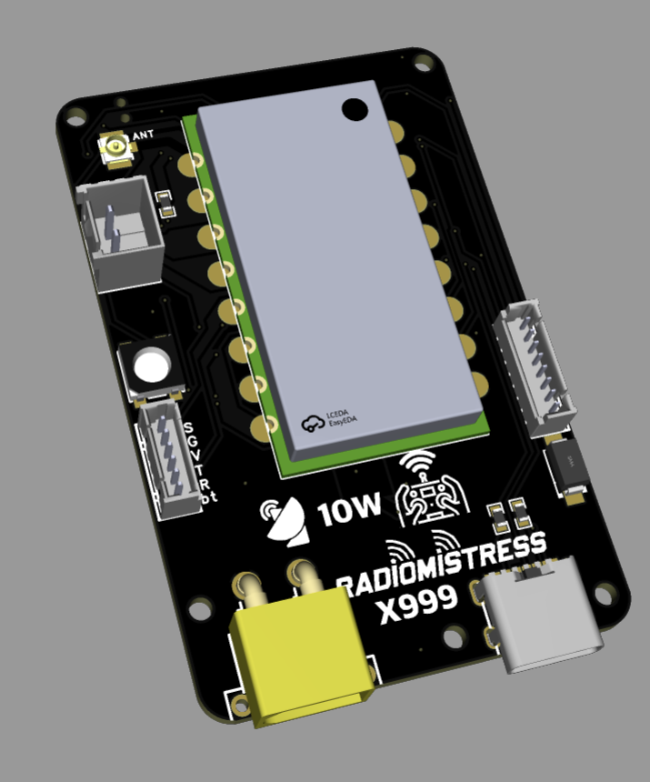
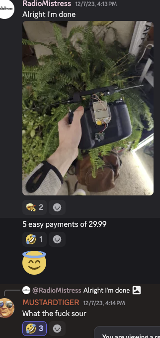

Radiomistress TX999
Pushing the Limits of RF Performance

Introducing the Radiomistress TX999, a next-generation high-power FPV radio system designed for pilots who demand unmatched range, reliability, and signal penetration.
Key Features:
- Unparalleled 10W Output – Expands your control range to new extremes.
- Advanced Signal Integrity – Engineered for rock-solid connectivity in the most demanding environments.
- Rugged Power Options – Supports LiPo, external power sources, and 12V vehicle integration for extended field use.
- Adaptive RF Management – Minimizes interference for you while possibly causing unexpected behavior in nearby electronics.
- Optimized for Long-Range and Industrial Applications – Ideal for professional FPV operations, UAV research, and remote telemetry.
Note: Compliance with local RF regulations is the responsibility of the operator. Radiomistress is not responsible for lost DJI connections, unexpected visits from regulatory agencies, increased attention from military radar operators, or mysterious black SUVs parked near your flying field.
Pricing:
Only 5 easy payments of $29.99!
Approved by the ELRS Developers

Stay Updated